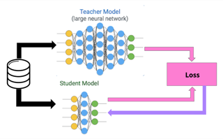
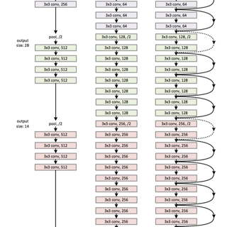
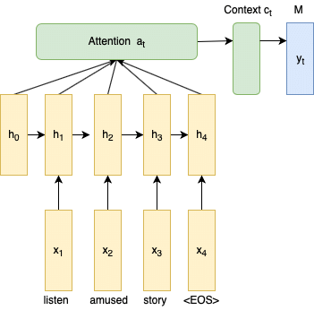
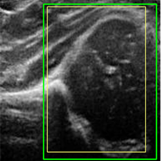

|
Ramit Pahwa
I'm a Master's student in Computer Science at UT Austin, where I work on video quality assessment and diffusion models as a Research Assistant in the LIVE Lab, advised by Prof. Alan Bovik.
I'm interested in computer vision and efficient representations of neural networks.
Previously, I was a Software Engineer at Adobe, where I worked on Adobe's mobile PDF engine and business-critical features: text-to-speech, neural topic modelling, and an efficient BERT model for question answering on PDFs.
I led the enterprise deployment of Acrobat Android, making it more secure, which led to 10x growth in enterprise customers.
Before that, I received my Bachelor's and Master's degrees in Mathematics and Computing from IIT Kharagpur.
Email /
Resume /
CV /
Twitter /
Github /
LinkedIn
|
|
Research
I'm interested in computer vision and efficient representations of neural networks. Much of my work has been on making models smaller and faster to run: distilling knowledge from large models into compact ones, and compressing trained networks so they can be deployed on mobile devices.
|
|

|
Model Blending for Text Classification
Ramit Pahwa, Surya Dwivedi, Jayanta Mukhopadhyay, Sunav Choudhary, Vishwa Vinay
arXiv, 2022 (Master's Thesis, IIT Kharagpur & Adobe Research)
arXiv / paper / thesis
Blending in complementary knowledge from an LSTM teacher lets us train CNN students for text classification that are up to 15x faster at inference, while being more accurate than the same CNN trained directly on the data.
|
|

|
Data-Driven Compression of Convolutional Neural Networks
Ramit Pahwa, Manoj Ghuhan Arivazhagan, Ankur Garg, Siddarth Krishnamoorthy, Rohit Saxena, Sunav Choudhary
arXiv, 2019 (Adobe Research)
arXiv / code
Reinforcement learning over architecture search, combined with knowledge distillation, compresses trained CNNs such as VGG and ResNet automatically, exposing the trade-off between speed, memory and accuracy and exploiting the fact that a deployed model may only need a subset of the classes.
|
|

|
LSTMs with Attention for Aggression Detection
Nishant Nikhil, Ramit Pahwa, Mehul Kumar Nirala, Rohan Khilnani
TRAC Workshop, COLING, 2018
paper / code
An LSTM with an attention unit for the shared task on aggression identification in Facebook posts and comments, ranking 6th and 4th on the two Hindi subtasks.
|
|

|
Identification of Hip Dysplasia in Infants
Ramit Pahwa, Dana Cobzas
Research Internship, University of Alberta, 2017 (poster, UoA Symposium)
An end-to-end training regime for infant hip ultrasound that first localizes the femoral head with a Faster R-CNN and then segments it with a U-Net, built on a collected and cleaned set of high-dimensional MRI images.
|
|